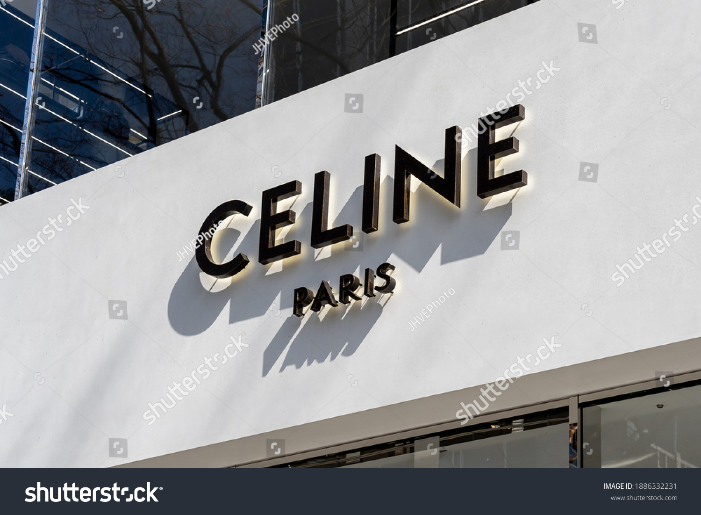

Famous Brands Known All Around the World
1.LOUIS VUITTON

Louis Vuitton decided that he wanted to become a trunk master at the ripe age of sixteen. Not only did this lead to him becoming a designer, but also an inventor, creating locks that had never been seen before. The brand continues to be best known for their bags and luggage, with travel remaining at the heart of the house alongside their RTW collections.
2.GUCCI

Founded by Guccio Gucci in 1921, the label is one of the original luxury labels and one of the world leaders in apparel and accessories. The label is best known for its extravagant style and luxury textiles. Gucci continues to redefine fashion to fit the 21st century while representing the highest quality of Italian craftsmanship and attention to detail.
3.DIOR

The brand was founded in 1948 by Christian Dior. Though the European luxury goods company is now chaired by the French businessman, Bernard Arnault, who is also the head of LVMH which is the worlds largest luxury group. Dior’s sophisticated, contemporary and confident style, sticks to a formal and minimal style. While Dior Homme has introduced a characteristic slim silhouette under the creative direction of Hedi Slimane, the brand continues to challenge convention.
4.PRADA
Prada always thinks outside the box and doesn’t create their designs based on preconceived styles or fashion trends. As a result, the label prides itself on the uncompromised quality and freedom of expression. The Italian luxury fashion house is one of the biggest names in the industry, founded in 1913 by Mario Prada. Specializing in leather handbags, travel accessories, shoes, ready-to-wear, perfumes, and other fashion accessories, the brand has managed to stand the test of time.
5.SAINT LAURENT
Yves Saint Laurent and his partner, Pierre Bergé, founded the brand 1961. The French luxury house is still considered one of the world’s most prominent fashion houses, known for its modern and iconic pieces. Saint Laurent embodies youth culture and emphasizes gender-fluidity through their gender-neutral clothing and simple, yet classic style, that’s explosively cool, entwining rebellious, punk with luxury.
6.GIVENCHY
The French luxury fashion and perfume house were founded in 1952 by designer Hubert de Givenchy came to prominence through his mastery of silhouette. The label strikes the perfect balance between traditional and modern style, keeping to a casual yet classic look that has been inspired by many artists, friends, muses and loyal clients. Though the fashion house is now owned by the luxury conglomerate, LVMH, the brand is still known for being one of the original top-designer brands, and a leader in the fashion industry.
7.BURBERRY
Thomas Burberry originally designed his clothing to protect people from the cold harsh British weather, sourcing hardwearing fabrics that revolutionized weatherproof clothing, starting in 1856. To this day, Burberry has a distinctive British identity known for its classic outerwear pieces, using traditional woven patterns and slick tailoring.
8.CALVIN KLIEN

Klein was launched in 1968 by American fashion designer, Calvin Richard Klein. The label is a global lifestyle megabrand with a global presence that prides itself on its provocative, modern and sensual nature. The brand has a minimal aesthetic, that cleverly combines unstructured tailoring with iconic staples.
9.RALPH LAUREN
Ralph Lauren stands at the forefront of fashion, being a global leader in design and marketing since the fashion house was invented in 1967, while Ralph himself, is an icon in the industry. The brand provides apparel, accessories, and fragrance for men, women and children, and is super stylish. The label continues to be the leader in the latest trends and always provides the best runway looks.
10.CELINE

Celine (formerly spelled Céline, and stylized in all caps) is a French ready-to-wear and leather luxury goods brand that has been owned by LVMH group since 1996.On January 21, 2018, LVMH announced the appointment of Hedi Slimane as Artistic, Creative and Image Director, set to join the house on February 1. He is to direct all Céline collections, extending the brand's offering with the launch of men’s fashion, couture and fragrances.
11.BVLGARI
Bvlgari is an Italian luxury brand known for its jewellery, watches, fragrances, accessories, and leather goods.Currently part of the LVMH Group.Also called Bulgari. Bulgari was founded in the region of Epirus, Greece, in 1884 by the silversmith Sotirios Boulgaris as a single jewellery shop that has, over the years, become an international brand. The company has evolved into a player in the luxury market, with an established and growing network of stores.Presents the most stylist and royal acessories.
12.ADIDAS
Adidas AG is a German multinational corporation, founded and headquartered in Herzogenaurach, Bavaria, that designs and manufactures shoes, clothing and accessories. It is the largest sportswear manufacturer in Europe, and the second largest in the world, after Nike.The three stripes are Adidas' identity mark, having been used on the company's clothing and shoe designs as a marketing aid.